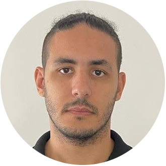

A PLIT é uma organização de envolvimento social que conecta pessoas com interesse em realizar algum trabalho voluntário e se aproximar de causas sociais.Diretamente com organizações, movimentos e coletivos sociais (“ONGs”) que precisam de voluntários para atividades ou projetos. Atuamos fazendo pontes e compartilhando oportunidades de engajamento, conteúdos e informações, com o objetivo de fortalecer e potencializar os trabalhos das organizações sociais e construir uma sociedade mais humana e participativa.
Nosso Propósito
Acreditamos no voluntariado como uma ferramenta de transformação social, e uma das formas de realização de uma cidadania ativa e participativa. Temos como pilar, o #Doityourself que descreve que a mudança só vem através de você tomar uma ação. Por isso, temos como missão fortalecer a cultura do voluntariado no Brasil para potencializar os trabalhos do setor social e gerar uma sociedade mais humana, consciente e compromissada. É um compromisso social e uma oportunidade de apoiar, aprendendo com trabalhos sérios.
Nosso Time
Pedro Grama
Tamiris Rezende
Icaro Ferreira
Leonardo Croce